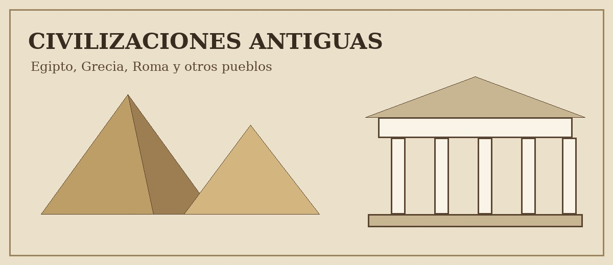

Temas de Historia
Conoce algunas etapas importantes de la Historia.

1. Civilizaciones antiguas
Egipto, Grecia, Roma y Mesopotamia crearon ciudades, leyes y sistemas de escritura.
2. Edad Media
Fue un periodo de la historia europea que comenzo despues de la caida del Imperio romano de Occidente.
3. Conquista de Mexico
En 1521 cayo Mexico-Tenochtitlan despues de un conflicto entre españoles y sus aliados indigenas contra los mexicas.
4. Independencia de Mexico
La lucha comenzo en 1810 y la independencia se consumo en 1821.
5. Revolucion Mexicana
Fue un movimiento que comenzo en 1910 y busco cambios politicos y sociales.